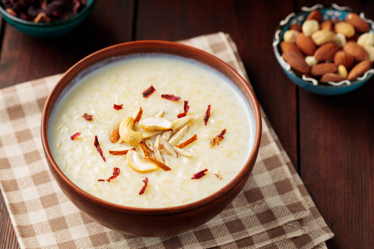

Kheer(Rice Pudding)

Description
Ingredients
3 tablespoons white sugar
½ teaspoon ground cardamom
½ teaspoon rose water (Optional)
¼ cup sliced almonds, toasted
¼ cup chopped pistachio nuts
Steps
- Bring coconut milk, milk, and sugar to a boil in a large saucepan over medium heat. Add rice, reduce the heat to low, and simmer until mixture thickens and rice is tender, about 20 minutes.
- Stir in raisins, cardamom, and rose water; cook for a few more minutes. Ladle into serving bowls and garnish with almonds and pistachios.